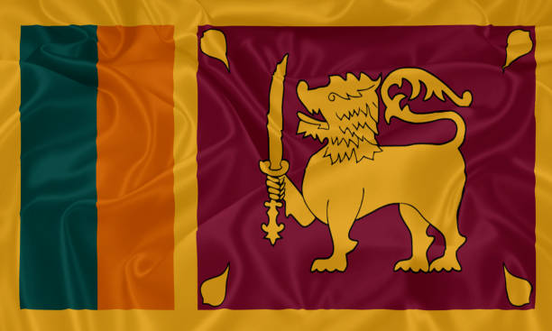

Personal Information


- Full Name: Priyantha Wickremesinghe
- Political Party: Nava Sama Samaja Party
- Symbol: Table
- Nationality: Sri Lankan
- Profession: Politician
Political Background and Career
- Political Involvement: Priyantha Wickremesinghe is the leader of the *Nava Sama Samaja Party* and is running in the 2024 presidential election with the *Table* as his symbol. He represents the left-wing ideology of social justice and equality, focusing on empowering the working class.
- Political Platform: Wickremesinghe's campaign is rooted in socialist principles, focusing on wealth redistribution, labor rights, and free public services for all citizens.
Key Focus Areas
- Economic Justice: Advocates for wealth redistribution policies to reduce inequality and improve living standards for the working class and underprivileged.
- Labor Rights: Strong supporter of workers' rights and is committed to improving wages and working conditions in both public and private sectors.
- Public Services: Promotes the expansion of free education, healthcare, and welfare services for all citizens.
Political Achievements
- Leader of Nava Sama Samaja Party: As leader of the party, Wickremesinghe continues to push for socialist reforms and policies that benefit the working class.
Controversies & Criticisms
- Leftist Ideology: Critics argue that his socialist agenda may not be feasible in Sri Lanka’s current economic climate, where there is a growing demand for private sector investment and economic liberalization.
2024 Political Prospects
- Position in 2024 Elections: Priyantha Wickremesinghe is contesting the 2024 presidential election, representing the *Nava Sama Samaja Party* with the *Table* as his symbol. His campaign is focused on socialist principles and promoting equal rights for all citizens.
Personal & Family Life
- Family: Information about his family is not widely available.
Visual and Symbolic Representation
- Appearance: Priyantha Wickremesinghe is often seen in formal but modest attire, aligning with his representation of the working class and commitment to equality and simplicity.
Color and Branding
- Campaign Symbol: The *Table*, symbolizing solidarity, collaboration, and the foundation of equal rights and opportunities for all citizens.
🦂